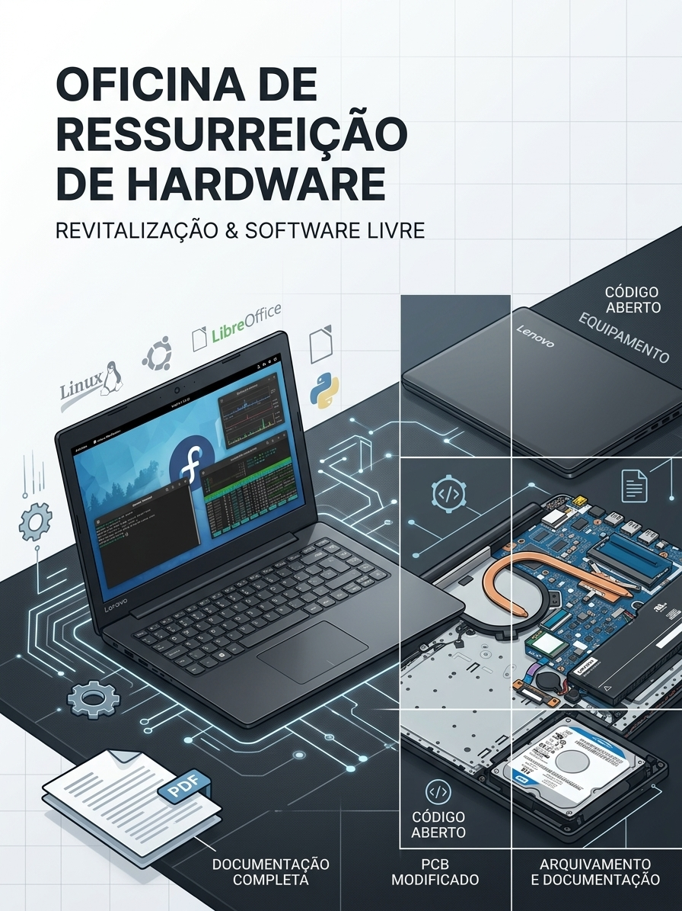

Sobre mim
"Unir infraestrutura, processos e tecnologia é o que guia meu trabalho."
Sou técnica de TI em formação pelo SENAC, com base em Administração. Já concluí as etapas de Suporte e Manutenção e de Redes, e hoje estudo desenvolvimento web.
Minha trajetória começou pela saúde: sou vegetariana desde criança e estudei Nutrição. Depois vim para a Administração, por acreditar que organização e educação financeira são base para qualquer área. Cheguei à TI por curiosidade, porque ela está em tudo e muda o mundo em ritmo acelerado
Habilidades Técnicas
Suporte e Manutenção
Redes e Servidores
Desenvolvimento
Gestão e Atendimento
Formação e Experiência
- Técnico em Informática (em andamento) SENAC
- Administração (3º semestre concluído) Instituição Metropolitana
- Técnico em Administração (2022) ETEC
- Técnico em Nutrição e Dietética (2019) ETEC
- Cursos Complementares Assistente de Suporte e Manutenção de Computadores; Assistente de Operação de Redes
- Voluntariado — Apoio Fiscal (IR) • 1 mês Projeto supervisionado por professores, com atendimento ao público, organização de documentos e preenchimento no Programa IRPF.
.jpg)
- Objetivo: Montar um servidor de biblioteca digital que armazena e organiza livros (PDFs e EPUBs) com acesso pela rede local.
- Infraestrutura: VM no VMware com Ubuntu Server, topologia de rede e endereçamento IP definidos, DNS local, Docker e Docker Compose.
- Execução: Especifiquei e criei a VM, instalei o Ubuntu Server e configurei IP e DNS local. Extraí e instalei o certificado do proxy corporativo, instalei Docker/Compose e subi o Calibre-Web Automated em contêiner. Realizei o primeiro acesso, configurei biblioteca e usuários com permissões distintas, e testei o envio de PDFs/EPUBs com busca automática de metadados e capas.

- Revitalização de um notebook com software de código aberto. Causa: o Windows 10 foi pensado para SSDs e é pesado demais para um processador de baixo consumo e um HDD lento.
- Problema (Windows 10) Memória: cerca de 3,0 GB (75%) dos 4 GB em uso com o sistema parado, o que forçava o uso do disco como memória virtual. Disco em 100%: leituras e escritas em segundo plano travavam os programas.
- Solução: troca do Windows por Linux (zorin), mais leve e de código aberto.
.jpg)
- Uso de EPIs na Construção Civil: O Cenário dos Autônomos Pesquisa de Campo & Análise de Segurança do Trabalho • Ribeirão Preto/SP (2022) Estudo técnico (ETEC / Centro Paula Souza) sobre o comportamento preventivo de profissionais autônomos frente às Normas Regulamentadoras (NRs).
- Objetivo: Avaliar a adesão aos EPIs e os entraves fora do regime CLT.
- Principais Dados: 100% conhecem os equipamentos, mas 21,4% não os utilizam — motivados por desconforto físico e cultura, não por custo. Além disso, 85,7% desconhecem as normas legais, mas 92,8% desejam capacitação.
- Conclusão: Propõe cursos gratuitos e campanhas educativas (Sebrae/SUS) para reduzir acidentes.